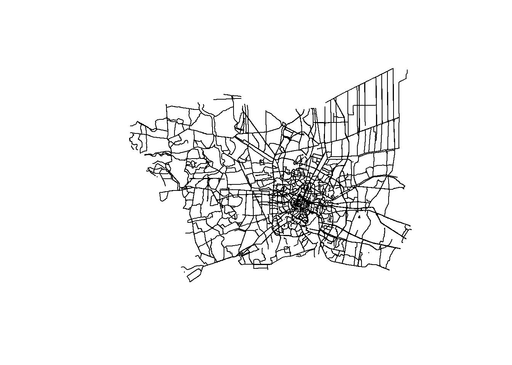

pacman::p_load(
readr, # for importing data
tidyverse, # for data manipulation and visualization
sf, # for spatial data handling
tmap, # for thematic maps
lubridate, # for date/time manipulation
spatstat, # for point pattern analysis
ggstatsplot, # for statistical data viz
maptools, # for spatial object manipulation
raster, # for raster data handling
sp, # for spatial data classes and methods
leaflet, # for interactive maps
ggplot2, # for advanced plotting
spNetwork # for spatial network analysis
)
set.seed(1234)Take-home Exercise 1
Set up
Load packages
Load files
In this section, we will load and prepare the datasets necessary for our analysis of road traffic accidents in the Bangkok Metropolitan Region (BMR). The BMR, also known as Greater Bangkok, encompasses the city of Bangkok and its surrounding provinces. According to Wikipedia, this area includes Bangkok itself and five adjacent provinces: Nakhon Pathom, Pathum Thani, Nonthaburi, Samut Prakan, and Samut Sakhon. Our analysis will focus on this region, which serves as the political, economic, and cultural heart of Thailand.
We’ll be working with three primary datasets: Thailand Road Accident data from 2019-2022, road network data from OpenStreetMap, and administrative boundary data. These datasets will allow us to conduct a comprehensive spatio-temporal analysis of road traffic accidents in this densely populated and economically significant area of Thailand.
Data Wrangling 1: Correct Coordinate Reference System
In preparing our analysis of road traffic accidents in the Bangkok Metropolitan Region, care is taken to ensure our data is accurate and spatially consistent. First, we import the road accident data from 2019 to 2022 using read_csv(), a function chosen for its robust handling of various CSV formats (includes automatic reading of headers and correct tagging of date and time columns). Crucially, we filter out records with missing or empty longitude and latitude values. This step is vital as geographic coordinates are the cornerstone of our spatial analysis; including records without valid locations would skew our results and potentially lead to misleading conclusions about accident patterns.
We then transform this data into a spatial format using st_as_sf(). This conversion is essential as it allows us to perform spatial operations and visualisations. We specify the coordinate reference system (CRS) as EPSG:32647, which is tailored for Thailand. This was double-checked on https://epsg.io/. This choice is deliberate - using a local CRS ensures more accurate distance calculations and area representations compared to a global system like WGS84. For the road network data, sourced from OpenStreetMap, we employ st_read() to load the shapefile. Recognizing that OSM data can sometimes contain geometry inconsistencies, we apply st_make_valid(). This crucial step corrects any invalid geometries that could potentially crash our analysis or produce erroneous results in spatial operations. Lastly, we import administrative boundary data, again ensuring it aligns with our chosen CRS.
rdacc_sf <- read_csv("C:/zzzzzuu/ISSS626GAA/Take-home_Ex/Take-home_Ex01/data/thai_road_accident_2019_2022.csv") %>%
filter(!is.na(longitude) & longitude != "",
!is.na(latitude) & latitude != "") %>%
st_as_sf(coords = c(
"longitude", "latitude"),
crs=4326) %>% #WGS84, decimel degree
st_transform(crs = 32647) #32647 is Thai's
#read_csv from Readr is better than read.csv base R. It matters for headers with spacing, and also can autodetect dates.
roads_sf <- st_read("C:/zzzzzuu/ISSS626GAA/Take-home_Ex/Take-home_Ex01/data/hotosm_tha_roads_lines_shp.shp") %>%
st_make_valid() %>%
st_set_crs(4326) %>%
st_transform(crs = 32647)
admin_sf <- st_read(dsn = "C:/zzzzzuu/ISSS626GAA/Take-Home_Ex/Take-Home_Ex01/data", layer = "tha_admbnda_adm1_rtsd_20220121") %>%
st_set_crs(4326) %>%
st_transform(crs = 32647)Need to check unit of measurement!!!! See how to convert.
class(admin_sf)
class(rdacc_sf)
class(roads_sf)Check date and time format (POSIXct)
class(rdacc_sf$incident_datetime)
class(rdacc_sf$report_datetime)The incident_datetime and report_datetime fields are stored in POSIXct format, a structure that captures year, month, date, and time information. This format allows for easy extraction of specific temporal components such as month, day of the year, or year via lubridate package. The level of detail and flexibility in datetime handling is only available when the data is properly imported and parsed using readr.
Data Wrangling 2: Filtering to a smaller subset of data
The initial datasets cover all of Thailand and include various road types. To focus on the Bangkok Metropolitan Region (BMR), a spatial filter is applied to extract data for Bangkok and its five adjacent provinces: Nakhon Pathom, Pathum Thani, Nonthaburi, Samut Prakan, and Samut Sakhon. This step reduces data volume and ensures geographic relevance. Additionally, the road network data is filtered to include only roads accessible to motor vehicles, excluding roads like pedestrian paths and cycling lanes. These filtering processes enhance the accuracy of the subsequent analysis by focusing on relevant geographic areas and road types where motor vehicle accidents are likely to occur.
bangkok_areas <- c("Bangkok",
"Nonthaburi",
"Samut Prakan",
"Pathum Thani",
"Samut Sakhon",
"Nakhon Pathom")
admin_sf_bkk <- admin_sf %>%
filter(!is.na(ADM1_EN) & ADM1_EN %in% bangkok_areas)
unique(admin_sf_bkk$ADM1_EN) #check
plot(st_geometry(admin_sf_bkk)) #check
st_geometry_type(admin_sf_bkk) #check
rdacc_sf_bkk <- rdacc_sf %>%
filter(!is.na(province_en) & province_en %in% bangkok_areas)
unique(rdacc_sf_bkk$province_en) #check
plot(st_geometry(rdacc_sf_bkk)) #check
roads_sf_bkk <- st_intersection(roads_sf, admin_sf_bkk)
unique(roads_sf_bkk$highway) #check
roads_sf_bkk_veh <- roads_sf_bkk %>%
filter(!is.na(highway) &
!(highway %in% c("pedestrian",
"bridleway",
"cycleway",
"footway",
"steps",
"path")))
plot(st_geometry(roads_sf_bkk_veh)) #check
Thailand Highway Classification
Refer to https://wiki.openstreetmap.org/wiki/WikiProject_Thailand#Highway_classification for definitions of different roads and access that is legally allowed.
Converting MULTILINESTRINGs to LINESTRINGs
The road network data contains both linestrings and multilinestrings. Multilinestrings represent complex road segments with multiple connected lines, while linestrings are single, continuous lines. Converting all geometries to linestrings simplifies the data structure, ensuring uniformity across the dataset, and makes it easier for lixelisation. This conversion is necessary for consistent analysis, as many spatial operations work more efficiently with simple linestring geometries.
geometry_types <- roads_sf_bkk_veh %>%
st_geometry_type() %>%
as.character() %>%
unique()
if(length(geometry_types) == 1 && geometry_types == "LINESTRING") {
print("All geometries are LINESTRING")
} else {
print("Not all geometries are LINESTRING. Types found:")
print(geometry_types)
}
roads_sf_bkk_veh_ls <- roads_sf_bkk_veh %>%
st_cast("MULTILINESTRING", group_or_split = TRUE) %>%
st_cast("LINESTRING")
geometry_types <- roads_sf_bkk_veh_ls %>%
st_geometry_type() %>%
as.character() %>%
unique()
if(length(geometry_types) == 1 && geometry_types == "LINESTRING") {
print("All geometries are LINESTRING")
} else {
print("Not all geometries are LINESTRING. Types found:")
print(geometry_types)
}Write a smaller subset of the data for easier compute times
This segment makes our data smaller and easier to work with. It is savedin a special format (RDS) in a ‘sandbox’ folder. This helps my computer run faster and keeps the project tidy. I used commands to save and load data, and tell some parts of our code not to run again if not needed.
write_rds(roads_sf_bkk_veh_ls, "data/sandbox/roads.rds")
write_rds(rdacc_sf_bkk, "data/sandbox/rdacc.rds")
write_rds(admin_sf_bkk, "data/sandbox/admin.rds")roads <- read_rds("data/sandbox/roads.rds")
rdacc <- read_rds("data/sandbox/rdacc.rds")
admin <- read_rds("data/sandbox/admin.rds")Analysis
Roads dataset is still too dense. It is difficult to make meaningful insights out of it, so we will drop more, smaller roads.
unique(roads$highway) [1] "secondary" "residential" "secondary_link" "service"
[5] "track" "tertiary" "primary" "primary_link"
[9] "unclassified" "trunk_link" "motorway_link" "motorway"
[13] "construction" "trunk" "corridor" "tertiary_link"
[17] "raceway" "busway" "road" "proposed" roads_filtered <- roads %>%
filter(!is.na(highway) &
(highway %in% c("secondary",
"secondary_link",
"primary",
"primary_link",
"trunk_link",
"trunk",
"motorway",
"motorway_link",
"tertiary_link",
"tertiary")))
plot(st_geometry(roads_filtered))
tmap_mode('plot')
tm_shape(rdacc) +
tm_dots(col = "red", size = 0.1) +
tm_shape(roads_filtered) +
tm_lines()tmap_mode('plot')